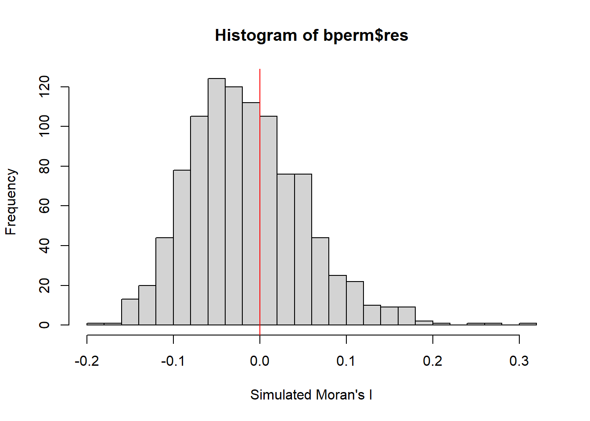

pacman::p_load(sf, spdep, tmap, tidyverse)2b: Global Measures of Spatial Autocorrelation
Spatial autocorrelation is the term used to describe the presence of systematic spatial variation in a variable. Where there is positive (high) spatial autocorrelation, there is spatial clustering and neighbours are similar. Conversely, where there is negative (low) spatial autocorrelation, checkerboard patterns are observed and neighbours are dissimilar.
Spatial autocorrelation can be used in the development of spatial policy, where one of the main development objectives of governments and planners is to ensure equal distribution of development in the area. Appropriate spatial statistical methods can be applied to discover if developments are evenly distributed geographically – if there are signs of spatial clustering and if so, where they are located.
Getting Started
The code chunk below uses p_load() of pacman package to check if the required packages have been installed on the computer. If they are, the packages will be launched.
- sf package is used for importing, managing, and processing geospatial data.
- tmap package is used for thematic mapping.
- spdep package is used to create spatial weights matrix objects.
The data sets used are:
- Hunan county boundary layer: a geospatial data set in ESRI shapefile format.
- Hunan_2012.csv: csv file that contains selected Hunan’s local development indicators in 2012.
Importing Data
Import shapefile into R
The code chunk below uses the st_read() function of sf package to import Hunan county boundary shapefile into R as a simple feature data frame called hunan.
hunan <- st_read(dsn = "data/geospatial",
layer = "Hunan")Reading layer `Hunan' from data source
`C:\magdalenecjw\ISSS624 Geospatial\Hands_on_Exercise\Ex2\data\geospatial'
using driver `ESRI Shapefile'
Simple feature collection with 88 features and 7 fields
Geometry type: POLYGON
Dimension: XY
Bounding box: xmin: 108.7831 ymin: 24.6342 xmax: 114.2544 ymax: 30.12812
Geodetic CRS: WGS 84There are a total of 88 polygon features and 7 fields in hunan simple feature data frame. hunan is in wgs84 GCS.
Import aspatial data into R
The code chunk below uses the read_csv() function of readr package to import Hunan_2012.csv file into R and save it as a R dataframe called hunan2012.
hunan2012 <- read_csv("data/aspatial/Hunan_2012.csv")Rows: 88 Columns: 29
── Column specification ────────────────────────────────────────────────────────
Delimiter: ","
chr (2): County, City
dbl (27): avg_wage, deposite, FAI, Gov_Rev, Gov_Exp, GDP, GDPPC, GIO, Loan, ...
ℹ Use `spec()` to retrieve the full column specification for this data.
ℹ Specify the column types or set `show_col_types = FALSE` to quiet this message.Performing relational join
left_join() of dplyr is used to join the geographical data and attribute table using County as the common identifier.
hunan <- left_join(hunan,hunan2012)%>%
select(1:4, 7, 15)Joining, by = "County"Visualising Regional Development Indicator
Prepare a basemap and a choropleth map showing the distribution of GDPPC 2012 by using qtm() of tmap package.
equal <- tm_shape(hunan) +
tm_fill("GDPPC",
n = 5,
style = "equal") +
tm_borders(alpha = 0.5) +
tm_layout(main.title = "Equal interval classification")
quantile <- tm_shape(hunan) +
tm_fill("GDPPC",
n = 5,
style = "quantile") +
tm_borders(alpha = 0.5) +
tm_layout(main.title = "Equal quantile classification")
tmap_arrange(equal,
quantile,
asp=1,
ncol=2)
Global Spatial Autocorrelation
This section details the steps taken to compute global spatial autocorrelation statistics and to perform spatial complete randomness test for global spatial autocorrelation.
Computing Contiguity Spatial Weights
Before computing the global spatial autocorrelation statistics, construct a spatial weights of the study area. The spatial weights is used to define the neighbourhood relationships between the geographical units (i.e. county) in the study area.
In the code chunk below, poly2nb() of spdep package is used to compute contiguity weights matrices for the study area. This function builds a neighbours list based on regions with contiguous boundaries. The code chunk below computes the queen contiguity weights matrix.
The
queenargument takesTRUE(default) orFALSEas options. Ifqueen = TRUE, this function will return a list of first order neighbours using the Queen criteria.
wm_q <- poly2nb(hunan,
queen=TRUE)
summary(wm_q)Neighbour list object:
Number of regions: 88
Number of nonzero links: 448
Percentage nonzero weights: 5.785124
Average number of links: 5.090909
Link number distribution:
1 2 3 4 5 6 7 8 9 11
2 2 12 16 24 14 11 4 2 1
2 least connected regions:
30 65 with 1 link
1 most connected region:
85 with 11 linksThe summary report above shows that there are 88 area units in Hunan. The most connected area unit has 11 neighbours. There are two area units with only one neighbours.
Row-standardised weights matrix
Next, assign equal weights to each neighboring polygon (style=“W”). This is accomplished by assigning the fraction 1/(#ofneighbors) to each neighboring county then summing the weighted income values. While this is the most intuitive way to summarise the neighbors’ values, it has one drawback in that polygons along the edges of the study area will base their lagged values on fewer polygons thus potentially over- or under-estimating the true nature of the spatial autocorrelation in the data. Other more robust options are available to correct such drawbacks, notably style=“B”.
The
zero.policy=TRUEoption allows for lists of non-neighbors. This should be used with caution since users may not be aware of missing neighbors in their dataset. Usingzero.policy=FALSEat first instance may be more advised as it returns an error if there are empty neighbour sets.
rswm_q <- nb2listw(wm_q,
style="W",
zero.policy = TRUE)
rswm_qCharacteristics of weights list object:
Neighbour list object:
Number of regions: 88
Number of nonzero links: 448
Percentage nonzero weights: 5.785124
Average number of links: 5.090909
Weights style: W
Weights constants summary:
n nn S0 S1 S2
W 88 7744 88 37.86334 365.9147Global Spatial Autocorrelation: Moran’s I
The code chunk below performs Moran’s I statistical testing using moran.test() of spdep to compute Global Spatial Autocorrelation statistics.
At a confidence interval of 95%,
- H0: There is no spatial autocorrelation in the dataset.
- H1: There is spatial autocorrelation in the dataset.
moran.test(hunan$GDPPC,
listw=rswm_q,
zero.policy = TRUE,
na.action=na.omit)
Moran I test under randomisation
data: hunan$GDPPC
weights: rswm_q
Moran I statistic standard deviate = 4.7351, p-value = 1.095e-06
alternative hypothesis: greater
sample estimates:
Moran I statistic Expectation Variance
0.300749970 -0.011494253 0.004348351 Given that p-value < alpha value, we can reject the null hypothesis. Given that Moran I (Z value) is positive, it suggests that the features in the study area are clustered and observations tend to be similar.
A positive Moran’s I value (I>0) suggests clustering and similar observations. A negative Moran’s I value (I<0) suggests dispersion and dissimilar observations. An approximately zero Moran’s I value suggests observations are arranged randomly over space.
Computing Monte Carlo Moran’s I
Monte Carlo simulation is used if there are doubts that the assumptions of Moran’s I are true (normality and randomization). The code chunk below performs permutation test for Moran’s I statistic by using moran.mc() of spdep. A total of 1000 simulations will be performed.
set.seed(1234)
bperm= moran.mc(hunan$GDPPC,
listw=rswm_q,
nsim=999,
zero.policy = TRUE,
na.action=na.omit)
bperm
Monte-Carlo simulation of Moran I
data: hunan$GDPPC
weights: rswm_q
number of simulations + 1: 1000
statistic = 0.30075, observed rank = 1000, p-value = 0.001
alternative hypothesis: greaterGiven that p-value < alpha value, we can reject the null hypothesis. Given that the Z value remains positive, it supports the earlier drawn conclusion that the features in the study area are clustered and observations tend to be similar.
Visualising Monte Carlo Moran’s I
It is good practice to examine the simulated Moran’s I test statistics in greater detail. This can be achieved by plotting the distribution of the statistical values as a histogram by using the code chunk below, which uses hist() and abline() of R Graphics.
mean(bperm$res[1:999])[1] -0.01504572var(bperm$res[1:999])[1] 0.004371574summary(bperm$res[1:999]) Min. 1st Qu. Median Mean 3rd Qu. Max.
-0.18339 -0.06168 -0.02125 -0.01505 0.02611 0.27593 hist(bperm$res,
freq=TRUE,
breaks=20,
xlab="Simulated Moran's I")
abline(v=0,
col="red") 
When comparing the observed Moran’s I value with the distribution of Moran’s I values obtained from the Monte Carlo simulation, it can be noted that the observed value is in the extreme tails of the distribution. This further supports the conclusion drawn earlier that the spatial pattern in the data is significantly different from randomness and supports the presence of spatial autocorrelation.
Global Spatial Autocorrelation: Geary’s C
Another method that can be used to compute Global Spatial Autocorrelation statistics is Geary’s c statistics testing. The code chunk below performs Geary’s C test using geary.test() of spdep.
At a confidence interval of 95%,
- H0: There is no spatial autocorrelation in the dataset.
- H1: There is spatial autocorrelation in the dataset.
geary.test(hunan$GDPPC, listw=rswm_q)
Geary C test under randomisation
data: hunan$GDPPC
weights: rswm_q
Geary C statistic standard deviate = 3.6108, p-value = 0.0001526
alternative hypothesis: Expectation greater than statistic
sample estimates:
Geary C statistic Expectation Variance
0.6907223 1.0000000 0.0073364 Given that p-value < alpha value, we can reject the null hypothesis. Given that Geary C (Z value) is small (<1), it suggests that the features in the study area are clustered and observations tend to be similar.
A large Geary’s C value (C>1) suggests dispersion and dissimilar observations. A small Geary’s C value (C<1) suggests clustering and similar observations. A Geary’s C value of 1 suggests observations are arranged randomly over space.
Computing Monte Carlo Geary’s C
The code chunk below performs permutation test for Geary’s C statistic by using geary.mc() of spdep.
set.seed(1234)
bperm=geary.mc(hunan$GDPPC,
listw=rswm_q,
nsim=999)
bperm
Monte-Carlo simulation of Geary C
data: hunan$GDPPC
weights: rswm_q
number of simulations + 1: 1000
statistic = 0.69072, observed rank = 1, p-value = 0.001
alternative hypothesis: greaterGiven that p-value < alpha value, we can reject the null hypothesis. Given that the Z value remains positive, it supports the earlier drawn conclusion that the features in the study area are clustered and observations tend to be similar.
Visualising Monte Carlo Geary’s C
Next, plot a histogram to reveal the distribution of the simulated values by using the code chunk below.
mean(bperm$res[1:999])[1] 1.004402var(bperm$res[1:999])[1] 0.007436493summary(bperm$res[1:999]) Min. 1st Qu. Median Mean 3rd Qu. Max.
0.7142 0.9502 1.0052 1.0044 1.0595 1.2722 hist(bperm$res, freq=TRUE, breaks=20, xlab="Simulated Geary c")
abline(v=1, col="red") 
When comparing the observed Geary’s C value with the distribution of Geary’s C values obtained from the Monte Carlo simulation, it can be noted that the observed value is in the extreme tails of the distribution. This further supports the conclusion drawn earlier that the spatial pattern in the data is significantly different from randomness and supports the presence of spatial autocorrelation.
Spatial Correlogram
Spatial correlograms are used to examine patterns of spatial autocorrelation in the data or model residuals. They show how correlated the pairs of spatial observations are when the distance (lag) between them increases - they are plots of some index of autocorrelation (Moran’s I or Geary’s c) against distance.Although correlograms are not as fundamental as variograms (a keystone concept of geostatistics), they are very useful as an exploratory and descriptive tool. For this purpose, they provide richer information than variograms.
Compute Moran’s I correlogram
In the code chunk below, sp.correlogram() of spdep package is used to compute a 6-lag spatial correlogram of GDPPC. The global spatial autocorrelation used in Moran’s I. The plot() of base Graph is then used to plot the output.
MI_corr <- sp.correlogram(wm_q,
hunan$GDPPC,
order=6,
method="I",
style="W")
plot(MI_corr)
Plotting the output alone may not provide complete interpretation. This is because not all autocorrelation values are statistically significant. Hence, it is important to examine the full analysis report by printing out the analysis results as in the code chunk below.
print(MI_corr)Spatial correlogram for hunan$GDPPC
method: Moran's I
estimate expectation variance standard deviate Pr(I) two sided
1 (88) 0.3007500 -0.0114943 0.0043484 4.7351 2.189e-06 ***
2 (88) 0.2060084 -0.0114943 0.0020962 4.7505 2.029e-06 ***
3 (88) 0.0668273 -0.0114943 0.0014602 2.0496 0.040400 *
4 (88) 0.0299470 -0.0114943 0.0011717 1.2107 0.226015
5 (88) -0.1530471 -0.0114943 0.0012440 -4.0134 5.984e-05 ***
6 (88) -0.1187070 -0.0114943 0.0016791 -2.6164 0.008886 **
---
Signif. codes: 0 '***' 0.001 '**' 0.01 '*' 0.05 '.' 0.1 ' ' 1
How to read Spatial Correlogram
- Each row represents a distance interval (lag) at which Moran’s I was calculated.
- The
estimatecolumn provides the calculated Moran’s I value at each distance interval. - The
expectedcolumn shows the value of Moran’s I under the null hypothesis of no spatial autocorrelation. Here, it’s the same constant value (-0.0114943) for all intervals, indicating the assumption of no spatial autocorrelation. - The
Pr(I) two sidedcolumn shows the p-value associated with Moran’s I at each lag.
Observations
- There are significant positive values in the first two rows, suggesting spatial clustering or positive spatial autocorrelation at the respective distances indicated by the lags. The positive values indicate that nearby regions have similar values of GDPPC being measured.
- There are significant negative values in the 5th and 6th rows, suggesting spatial dispersion or negative spatial autocorrelation at the respective distances indicated by the lags. The negative values suggest that neighboring regions tend to have dissimilar values of GDPPC.
- In conclusion, this correlogram suggests that there is significant spatial autocorrelation in GDPPC at various distance intervals.
Compute Geary’s C correlogram
In the code chunk below, sp.correlogram() of spdep package is used to compute a 6-lag spatial correlogram of GDPPC. The global spatial autocorrelation used in Geary’s C. The plot() of base Graph is then used to plot the output.
GC_corr <- sp.correlogram(wm_q,
hunan$GDPPC,
order=6,
method="C",
style="W")
plot(GC_corr)
Similarly, print out the analysis report by using the code chunk below.
print(GC_corr)Spatial correlogram for hunan$GDPPC
method: Geary's C
estimate expectation variance standard deviate Pr(I) two sided
1 (88) 0.6907223 1.0000000 0.0073364 -3.6108 0.0003052 ***
2 (88) 0.7630197 1.0000000 0.0049126 -3.3811 0.0007220 ***
3 (88) 0.9397299 1.0000000 0.0049005 -0.8610 0.3892612
4 (88) 1.0098462 1.0000000 0.0039631 0.1564 0.8757128
5 (88) 1.2008204 1.0000000 0.0035568 3.3673 0.0007592 ***
6 (88) 1.0773386 1.0000000 0.0058042 1.0151 0.3100407
---
Signif. codes: 0 '***' 0.001 '**' 0.01 '*' 0.05 '.' 0.1 ' ' 1Observations
- There are significant low Geary’s C values (C<1) in the first two rows, suggesting spatial clustering or positive spatial autocorrelation at the respective distances indicated by the lags. The low Geary’s C values indicate that nearby regions have similar values of GDPPC being measured.
- There is significant high Geary’s C value (C>1) in the 5th row, suggesting spatial dispersion or negative spatial autocorrelation at the respective distances indicated by the lag. The high Geary’s C value suggest that neighboring regions tend to have dissimilar values of GDPPC.
- In conclusion, this correlogram suggests that there is significant spatial autocorrelation in GDPPC at various distance intervals.